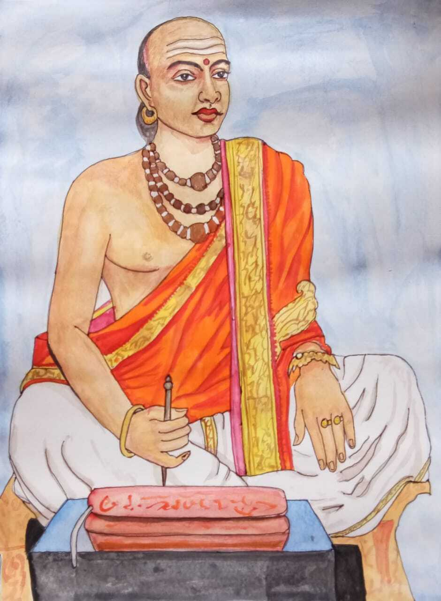

తటవర్తి గురుకులం


నన్నయ భట్టారకులు
శ్రీ వాణీ గిరిజాశ్చిరాయ దధతో వక్షోముఖాజ్ఞ్గేషు యే |
లోకానాం స్థితి మావహంత్య విహతాం స్త్రీపుంస యోగోద్భవాం |
తే వేదత్రయమూర్తయ స్త్రీపురుషా స్సంపూజితా వస్సురై |
ర్భూయాసుః పురుషోత్తమాంభుజభవ శ్రీకంధరా శ్శ్రేయసే ||

చ. నుతజలపూరితంబు లగు నూతులు నూఱిటికంటె సూనృత |
వ్రత! యొక బావి మేలు; మఱి బావులు నూఱిటికంటె నొక్కస |
త్క్రతువది మేలు; తత్క్రతుశతంబునకంటె సుతుండు మేలు; త |
త్సుత శతకంబుకంటె నొక సూనృతవాక్యము మేలు సూడఁగన్. ||
లోకానాం స్థితి మావహంత్య విహతాం స్త్రీపుంస యోగోద్భవాం |
తే వేదత్రయమూర్తయ స్త్రీపురుషా స్సంపూజితా వస్సురై |
ర్భూయాసుః పురుషోత్తమాంభుజభవ శ్రీకంధరా శ్శ్రేయసే ||
చ. నుతజలపూరితంబు లగు నూతులు నూఱిటికంటె సూనృత |
వ్రత! యొక బావి మేలు; మఱి బావులు నూఱిటికంటె నొక్కస |
త్క్రతువది మేలు; తత్క్రతుశతంబునకంటె సుతుండు మేలు; త |
త్సుత శతకంబుకంటె నొక సూనృతవాక్యము మేలు సూడఁగన్. ||
JANUARY 2022
SUN
MON
TUE
WED
THUR
FRI
SAT
SUN
MON
TUE
WED
THUR
FRI
SAT
1 న్యూ ఇయర్
2
3
4
5
6
7
8
9
10
11
12
13 వైకుంఠ ఏకాదశి
14 భోగి
15 మకర సంక్రాంతి
16 కనుమ
17
18
19
20
21
22
23
24
25
26 రిపబ్లిక్ డే
27
28
29
30
31